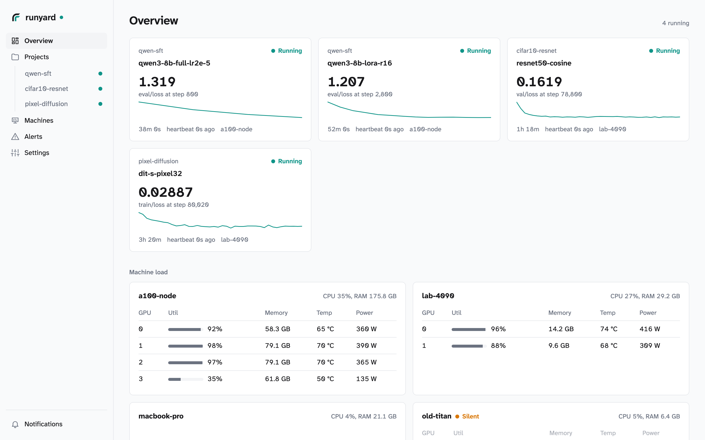
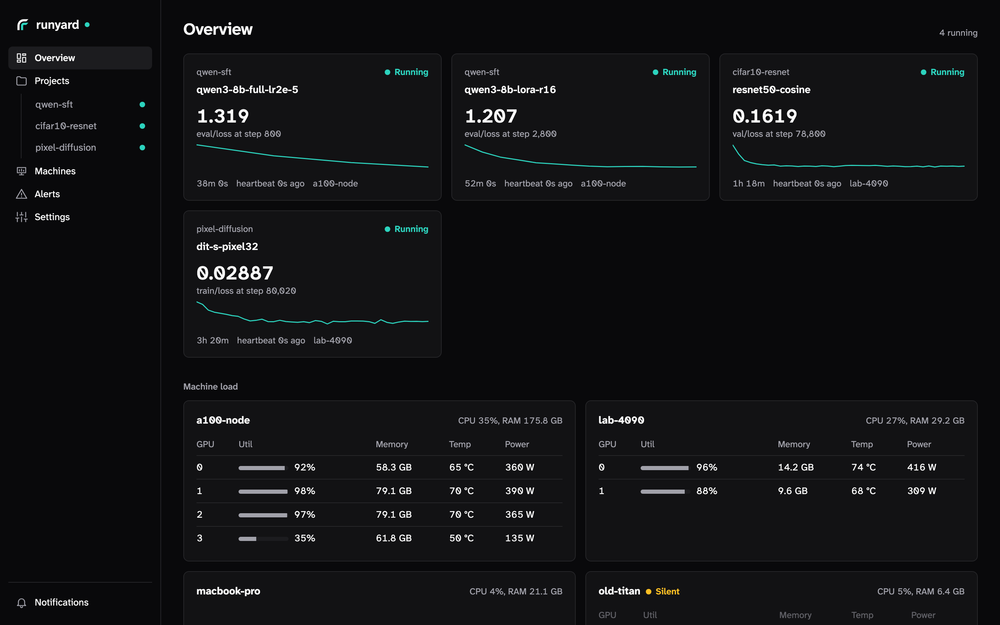

runyard is a self-hosted tracker for ML and deep learning runs: status, metrics, samples, logs and checkpoints in a phone-first web UI, notifications when a run finishes, fails or goes silent, and an MCP server so agents can read everything. Far fewer features than W&B or MLflow, on purpose.


Run the server with Docker Compose. One Go binary and PostgreSQL; media and artifacts go to a directory or an S3/R2 bucket.
# server
git clone https://github.com/cobanov/runyard && cd runyard
docker compose up -d --build
docker compose exec app /runyard-server key create my-laptop
Log from Python in three lines. Calls are queued and sent from a background thread, so the library never stops training.
# pip install runyard, then in the training script import runyard as ry run = ry.init(project="my-project", config={"lr": 3e-4}) run.log({"loss": loss.item()}, step=step) run.image("samples", grid, step=step) run.alert("loss is NaN", level="error")
Three lines of Python, or no code change at all from tools that speak Weights & Biases, TensorBoard or MLflow. Integrations for transformers, TRL, Accelerate, Lightning, Keras, XGBoost, LightGBM, scikit-learn and torchtune.
A phone-first web UI with live charts, samples, logs and config diffs between runs. A CLI with --json, and an MCP server so coding agents can read runs and alerts.
ntfy, Slack, Discord, Telegram, a webhook or web push to the installed app. Checks raise alerts from the data: a NaN loss, a crossed threshold, a stuck run.
runyard agent on each box shows its GPUs, every process on them whoever started it, CPU, memory and disk, training or not, with a day of history. You hear about it when a machine goes silent.
PostgreSQL, a media directory or an S3-compatible bucket, optional users and teams. API keys, notification channels and old runs are managed on a Settings page. Reach it over Tailscale, a tunnel, or bind it to a port.
A clean exit marks a run finished, an exception failed, and five minutes without a heartbeat crashed. What could not be sent is saved at exit for runyard sync.
runyard does less than W&B or MLflow, on purpose: no sweeps, reports or model registry. What it adds is what you need when the GPUs are your own: your data on your server, your phone told when a run dies, and every machine in view, training or not.
Scroll the table sideways for W&B, Trackio, MLflow and TensorBoard.
| October 2026 | runyard | Weights & Biases | Trackio | MLflow | TensorBoard |
|---|---|---|---|---|---|
| Price, license | Free, Apache-2.0 | Free tier, then paid plans; the server is closed source | Free, MIT | Free, Apache-2.0 | Free, Apache-2.0 |
| Your data lives | On your server: PostgreSQL, and a directory or an S3/R2 bucket | In W&B's cloud, or on a W&B Server you run under a license | On your disk (SQLite), in a Hugging Face Space, or on your own Trackio server | On your tracking server, or a managed one (Databricks and others) | In event files on your disk |
| To host it | One Go binary and PostgreSQL | W&B Server, which needs a license | A Python process | A Python server | A Python process, usually on the training machine |
| On your phone | A phone-first web UI you can install, with push notifications; an iOS app in TestFlight | An iOS app with push, for cloud accounts (not on-premises) | The web dashboard | The web UI | No |
| Notifications | ntfy, Slack, Discord, Telegram, webhooks, web push: finished, failed, crashed, stuck, or your own alert | Email, Slack, webhooks, app push | Your alerts, to Slack, Discord or a webhook | Not built in | No |
| A run that dies silently | Crashed after five minutes without a heartbeat, and you are told | Crashed once its heartbeats stop | Not detected | Not detected | Not detected |
| Your machines | runyard agent: GPUs and every process on them, whoever started it, with CPU, memory and disk, training or not; told when a machine goes silent | System metrics during a run | System metrics during a run | System metrics during a run, when turned on | No |
| Coding agents | Built-in MCP server; a CLI with --json | Official MCP server | MCP server and CLI | MCP server (MLflow 3.5 and later) | No |
| Code written for another tracker | W&B, TensorBoard and MLflow clients log to it unchanged | Syncs TensorBoard logs | import trackio as wandb | Its own API | Its own event files |
| Sweeps, reports, registry | None; checkpoints and artifacts are recorded per run | Sweeps, reports, artifacts and a model registry | Reports, versioned artifacts and a registry | A model registry, evaluation and GenAI tracing | No |
Checked against each project's documentation and releases in October 2026. Something out of date? Open an issue.